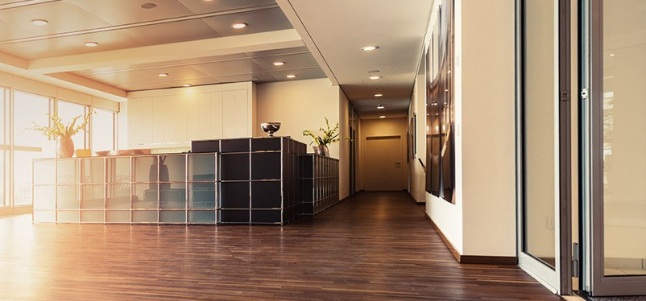

天津盛世鑫和某写字楼项目

- 项目位置
- 地块位于天津市和平区，东至规划禄安大街，南至福安大街，西至荣业大街，北至规划慎益大街。和平区位于天津市中心，是天津市政治、商贸、金融、教育、医疗卫生的中心，辖区面积9.97平方公里，户籍人口42万人，常住人口32.23万人。
- 项目情况
- （1）本项目地块由5宗地组成，分别签订了土地出让合同，土地用途为居住型公寓、商业、商业金融业，土地总面积为91，569平米，商业金融业（含商业）和居住型公寓总建筑规模不大于659，400平米。
- （2）商业金融业用地建筑密度不大于65%、绿地率不小于15%，居住型公寓用地建筑密度不大于30%、绿地率不小于35%。
我公司提供的服务：建筑节能技术咨询。